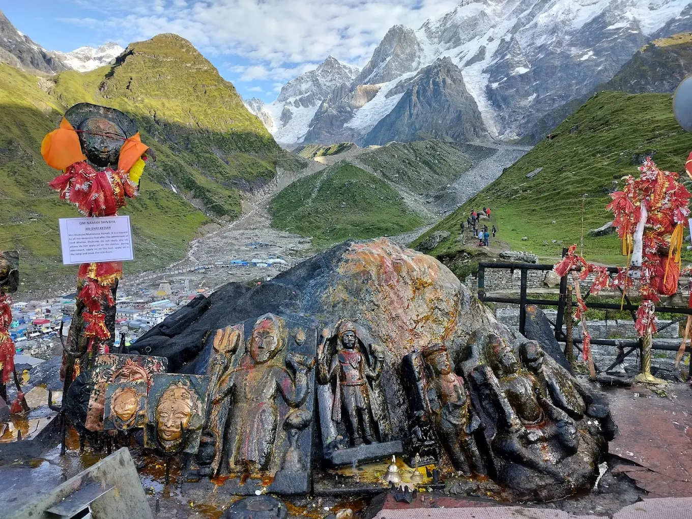
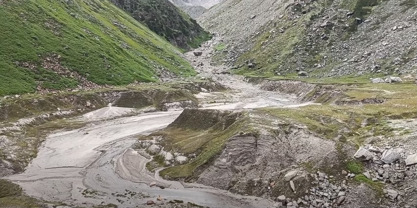
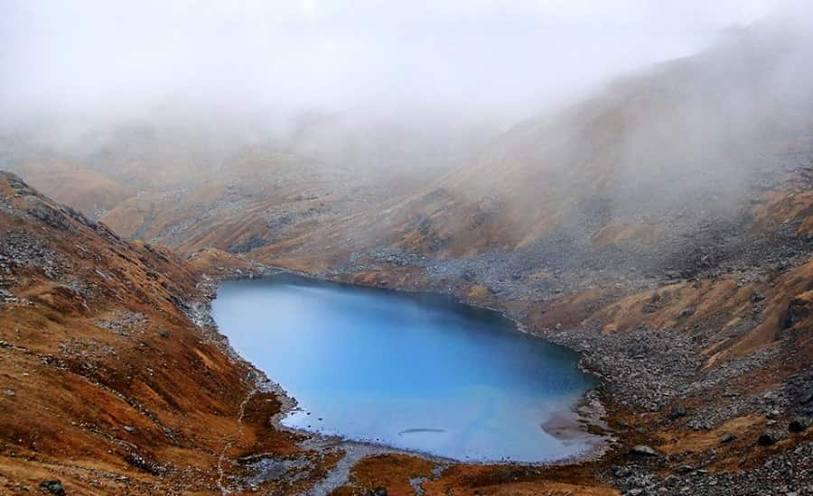

Places to Visit in Kedarnath

Kedarnath Temple
One of the twelve Jyotirlingas of Lord Shiva, over 1,000 years old.

Bhairavnath Temple
Guardian deity of Kedarnath, offering panoramic views.

Gandhi Sarovar
A serene glacial lake near Kedarnath.

Vasuki Tal
High-altitude lake known for spiritual significance.